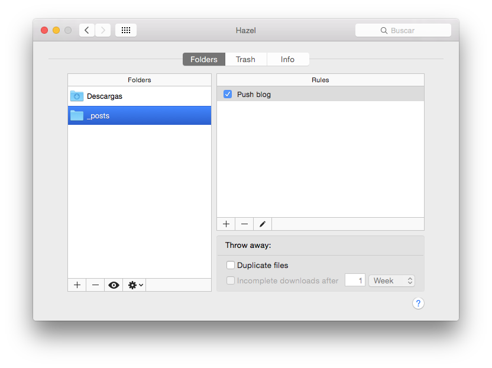
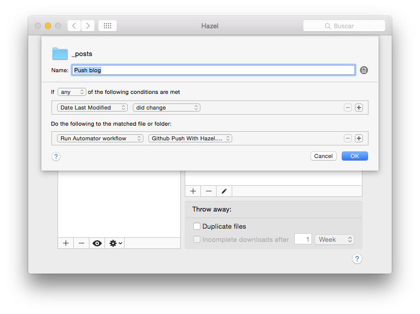

Voy de camino a mi trabajo mientras mi ordenador se queda en casa, trabajando para mí. Estas líneas están escritas desde un vetusto, pero efectivo, iPhone 4S.
Me surgió hace tiempo la pregunta de si era posible tener un blog cuyo diseño pudiera modificar con facilidad y a la vez pudiera subir posts y editar desde cualquier sitio. Markdown me había conquistado y cada vez lo usaba más en el ámbito académico y personal, por lo que quería poder utilizarlo para crear contenido sin importar donde estuviera.
Wordpress no era la solución adecuada. Aún pudiendo escribir desde cualquier lugar, los diseños se me hacían toscos y cualquier intento de retoque tenía un coste enorme. Markdown estaba descartado en esta plataforma.
Ghost tenía una aproximación parecida a la que deseaba. Pero la necesidad de tener Node.js corriendo, con el consiguiente coste de hosting, unido a las quejas de la gestión de borradores, hicieron que me retractara de usar esta plataforma.
Fue Jekyll el que terminó por convencerme por su sobrado soporte y extensión. Que sea el motor de generación de páginas de Github ya es una garantía. La cuestión era como integrar y automatizar las publicaciones, pues para ir actualizando el blog se debe realizar el push al repositorio donde estaría almacenado el blog. Finalmente, buscando por la red di con este post de Amit Jain. Donde relataba como había configurado su blog para permitir editar desde cualquier lugar. Fue de esta manera como conocí una aplicación clave para los usuarios de Mac, Hazel.
Hazel
Tanto si eres un maníaco del orden, como si eres un desastre Hazel es tu mejor amigo. Básicamente se instala como un panel de preferencias en el que controlaremos las reglas que corre. Las reglas son pequeños scripts que realizan acciones diversas, desde mover archivos, cambiar su nombre o directamente lanzar un workflow de Automator.
Para realizar este proceso necesitarás:
- Obviamente, Mac OS X
- Un blog en Jekyll (hospedado en Github Pages)
- Command Line Tools
- Hazel
- Los Workflow de Automator obtenidos del post.
Tras instalar Hazel e indagar en su sencillo panel de preferencias, solo tendríamos que añadir la carpeta “_post” a Hazel. Esto se realizaría con el “+” que se encuentra en la esquina inferior izquierda de la ventana.

Después no hay más que añadir la siguiente regla. Para ello, solo hay que, de nuevo, pulsar el otro símbolo “+” que hay en la ventana y añadir la correspondiente regla.

Lo que se acaba de hacer indica a Hazel que cada vez que cambie la fecha de última modificación del contenido de la carpeta, corra el Workflow de Automator, que actualizará el blog. El único cambio que hay que hacer, es cambiar la ruta de acceso a la carpeta “_post” en el flujo de trabajo para que funcione. Una vez hecho esto, el programa enviará un mensaje a tu iPhone (si lo tienes), que contendrá “Pushed: Hora del envío”.
De esta manera tan sencilla cada vez que editemos un post o coloquemos uno nuevo en la carpeta de “_post” de nuestro repositorio local, Hazel se encargará de realizar un “push” al repositorio en Github.
Espero en breves tener preparado una breve quía de como crear un blog en Github con coste 0. Muchas gracias por leer, cualquier duda, no dudes en comentar o enviarme un mail.